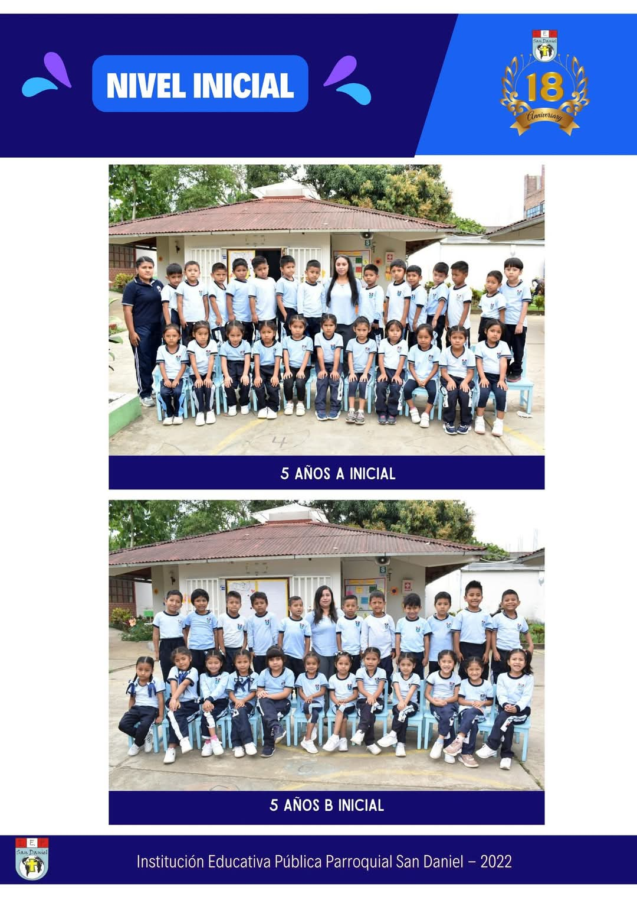

Nivel Inicial
El nivel inicial brinda un espacio seguro y estimulante donde los niños desarrollan sus habilidades emocionales, sociales y cognitivas a través del juego, la exploración y el afecto.
Nivel Primaria

La primaria promueve el aprendizaje integral con énfasis en valores, pensamiento crítico y habilidades comunicativas, preparando a los estudiantes para nuevos desafíos.
Nivel Secundaria
El nivel secundario forma jóvenes líderes, fortaleciendo su formación académica, espiritual y ética con enfoque en el compromiso social y vocacional.